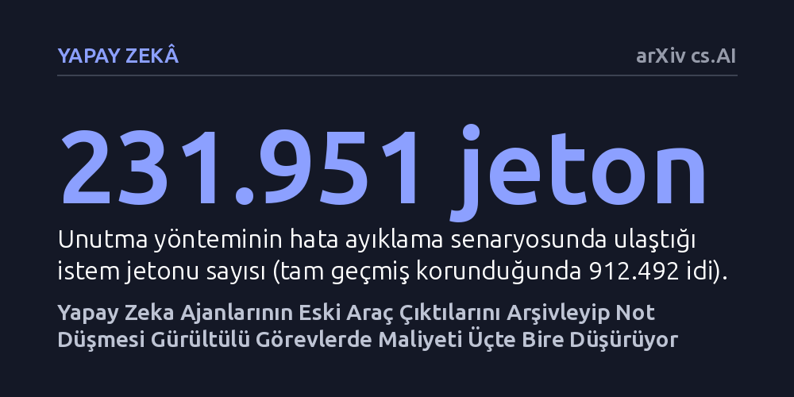

YAPAY-ZEKA · arXiv cs.AI · 2026-10-10
Araç kullanan yapay zeka ajanlarının eski gözlemleri kısa notlarla değiştirip arşivlemesinin maliyet ve performans etkisi araştırıldı. Yöntemin gürültülü hata ayıklama görevlerinde girdi jetonlarını yarıya indirip maliyeti üçte bire düşürdüğü, ancak çalışma süresini yüzde 17 uzattığı ve her iş türünde kazanç sağlamadığı saptandı.
Yapay zeka modellerinin her şeyi eksiksiz hatırlamasının her zaman verimli olmadığını, gürültülü verileri kontrollü biçimde unutup arşivlemenin maliyeti büyük oranda düşürebileceğini gösteriyor.

Günümüzde harici araçları ve komut satırlarını kullanarak karmaşık yazılım işlerini yürüten yapay zeka ajanları, adımlarını planlarken sürekli olarak geçmiş komut çıktılarına başvurur. Ancak bir hata ayıklama sürecinde çalıştırılan uzun bir sistem günlüğü veya geniş bir dosya içeriği binlerce satırdan oluşsa da ajanın bir sonraki adımı için yalnızca tek bir satırlık hata kodu önem taşıyabilir. Buna rağmen mevcut sistemler, üretilen devasa çıktıları sonraki her adımda isteme baştan eklemeyi sürdürür.
Bu durum hem dil modeline gönderilen jeton miktarını katlayarak maliyetleri hızla tırmandırır hem de modelin dikkat penceresini gereksiz gürültüyle doldurarak muhakeme kalitesini tehdit eder. İnsan mühendisler bir komut çıktısından aradıkları bilgiyi alıp çıktının geri kalanını zihinlerinde tutmazken, yapay zekaların her ayrıntıyı sonsuza kadar yanında taşıması ciddi bir verimsizlik yaratmaktadır. Bu çalışma, ajanın kendi geçmişinde gereksiz gördüğü çıktıları kontrollü olarak unutmasının mümkün olup olmadığını sorguluyor.
Araştırmacı Jan-Peter Franke, dil modellerini yeniden eğitmeye ihtiyaç duymadan çalışan bir Python test ortamı kurguladı. Bu yöntemde model, daha önce çağırdığı araçların ürettiği uzun yanıtları inceliyor; işine yaramayan ayrıntıları orijinal konumunda kısa bir özet notla değiştiriyor, ancak çıktının tam halini silmek yerine gerektiğinde geri çağrılabilecek bir arşiv dizininde saklıyor.
Sistem tasarlanırken kritik bir güvenlik kuralı da gözetildi: Kullanıcının verdiği temel talimatlar ve ajanın kendi asistan mesajları bu unutma sürecinden tamamen muaf tutuldu; yani yalnızca araçların ürettiği ham gözlemler sıkıştırıldı. Bu mekanizmanın başarısını sınamak amacıyla biri sistem günlüğü ve hata ayıklama (OpenTelemetry) içeren, diğeri ise yeni uygulama geliştirme adımlarını kapsayan iki farklı görev akışı üzerinde karşılaştırmalı deneyler yürütüldü.
Gürültülü hata ayıklama görevinde kontrollü unutma yöntemi belirgin bir tasarruf sağladı. Tüm geçmişi hafızasında tutan standart yaklaşım toplam 912.492 istem jetonuna ulaşırken, unutma yöntemini kullanan model süreci 231.951 jetonla tamamladı. Kümülatif girdi jetonlarında yaklaşık yüzde 50 azalma kaydedildi ve tahmini API kullanım maliyeti yaklaşık 4,38 dolardan 1,28 - 1,44 dolar aralığına geriledi.
Ne var ki bu tasarruf bedelsiz gelmedi. Ajanın geçmiş çıktıları gözden geçirmek ve arşivlemek için ek adımlar atması gerektiğinden toplam istek sayısı arttı ve görevin tamamlanma süresi yüzde 17 uzadı. Ayrıca her iki yaklaşım da temel davranış testini geçmesine karşın, sonraki aşamalardaki doğrulama adımlarının tamamını kusursuz şekilde karşılayamadı.
Araştırmanın en dikkat çekici bulgularından biri, bağlam budamanın evrensel bir çözüm olmadığını göstermesidir. İkinci senaryo olan uygulama geliştirme aşamasında yapılan karşılaştırmalı denemede yöntem hiçbir bağlam veya maliyet tasarrufu sağlamadı. Hatta bazı aşamalarda bağlamın daraltılmasına rağmen elle yapılan kalite değerlendirmesinde çıktı kalitesinin düştüğü gözlemlendi.
Bu sonuçlar, yapay zeka ajanlarında bağlam yönetiminin iş yükünün yapısına doğrudan bağımlı olduğunu ortaya koymaktadır. Çok fazla ham ve gürültülü veri üreten hata ayıklama senaryolarında eski çıktıları not düşerek arşivlemek belirgin bir kaynak avantajı sağlarken, her bilginin birbirine bağlı olduğu kod yazma süreçlerinde rastgele veya erken unutma kalite kaybına yol açabilmektedir.